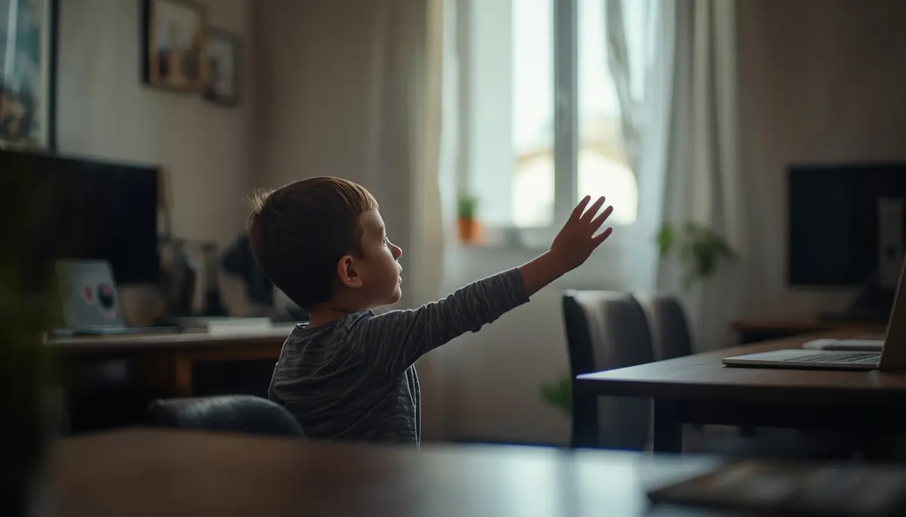
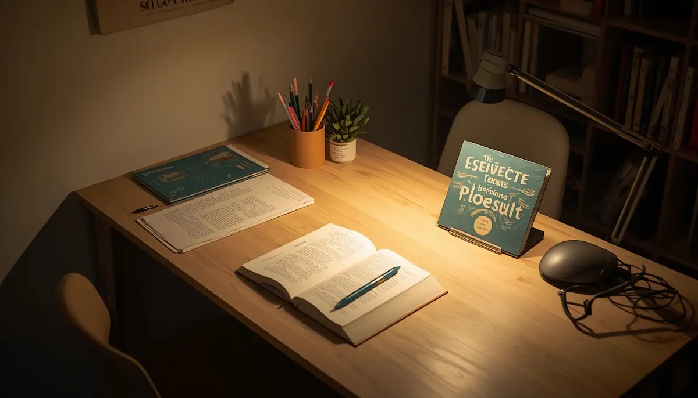
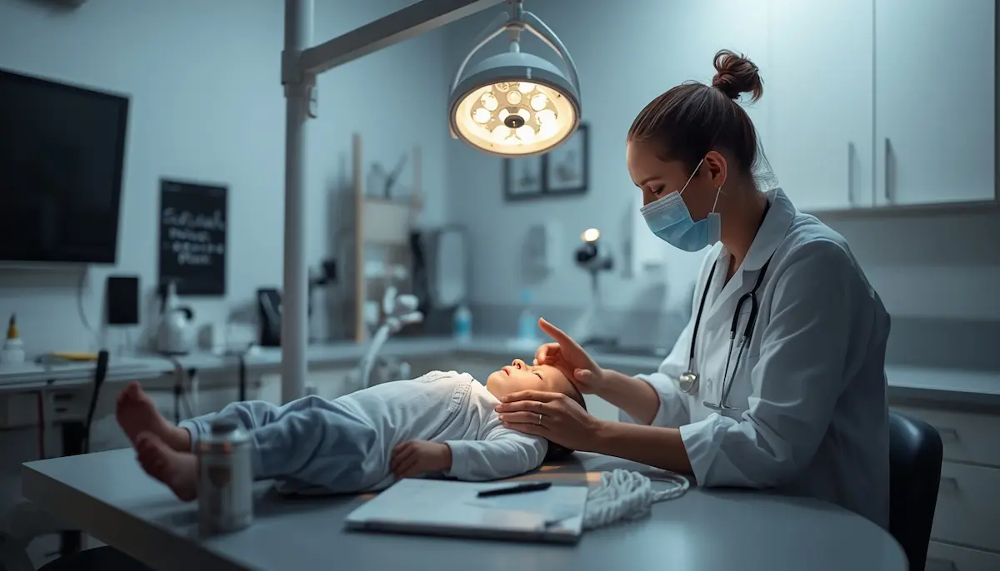

Salud visual: claves para cuidar la visión infantil
El desarrollo de la visión en la infancia es un proceso fascinante que condiciona el aprendizaje, la lectura y la interacción con el mundo. En la era digital actual, la sobreexposición a pantallas y el uso prolongado de dispositivos electrónicos plantean nuevos retos para la salud ocular de los menores. He reunido aquí una guía completa para prevenir la fatiga visual, detectar indicios tempranos de problemas refractivos y fomentar hábitos saludables al aire libre. Pincha en cada tarjeta para profundizar en cada tema.
Comprender el desarrollo de la visión en la infancia
Descubre cómo madura el sistema visual desde los primeros meses de vida y por qué proteger los ojos en la infancia es clave para el futuro.
Miopía, hipermetropía y astigmatismo infantil
Conoce los principales defectos visuales en la infancia, cómo detectarlos a tiempo y su evolución durante el crecimiento escolar.

Señales de alerta ante problemas visuales ocultos
Aprende a identificar indicios sutiles como acercarse demasiado al leer, frotarse los ojos con frecuencia o los dolores de cabeza tensionales.

Prevención de la fatiga digital y uso de pantallas
Pautas sencillas para regular la distancia de lectura, aplicar la regla 20-20-20 y limitar el tiempo de exposición a dispositivos electrónicos.

Iluminación y hábitos saludables para el estudio
Cómo preparar el espacio de lectura en casa con luz natural y artificial adecuada para evitar el esfuerzo ocular excesivo.

La primera revisión oftalmológica sin miedo
Cuándo acudir al optometrista u oftalmólogo pediátrico, cómo son las pruebas iniciales y por qué la detección precoz marca la diferencia.
Luz natural y actividades al aire libre contra la miopía
La importancia científica del tiempo al aire libre para frenar la progresión de la miopía infantil y relajar la acomodación visual.
Acompañar el uso de gafas y el bienestar visual
Estrategias respetuosas para que el niño acepte el uso de gafas correctoras con naturalidad, seguridad y autoestima positiva.